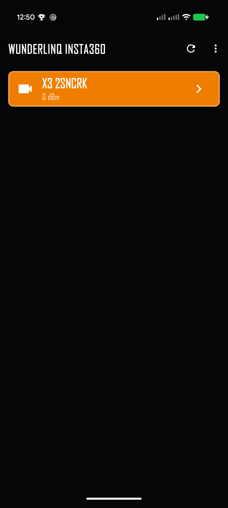
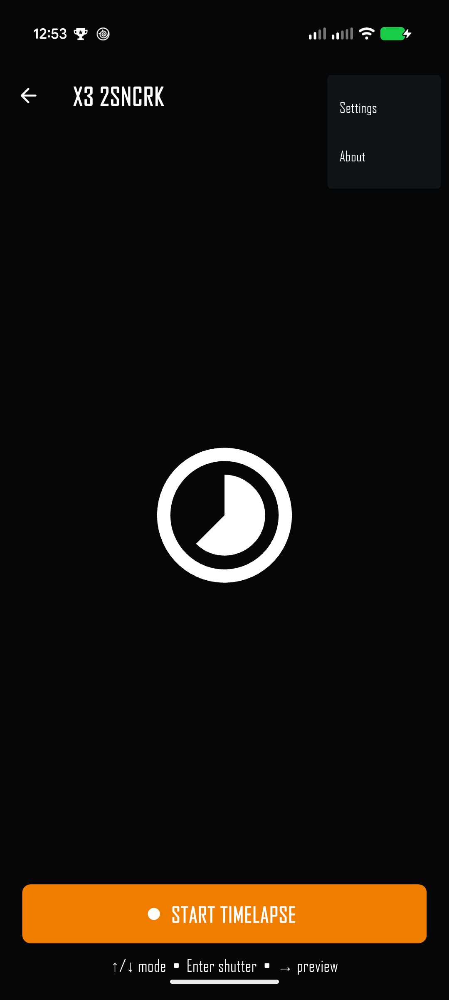
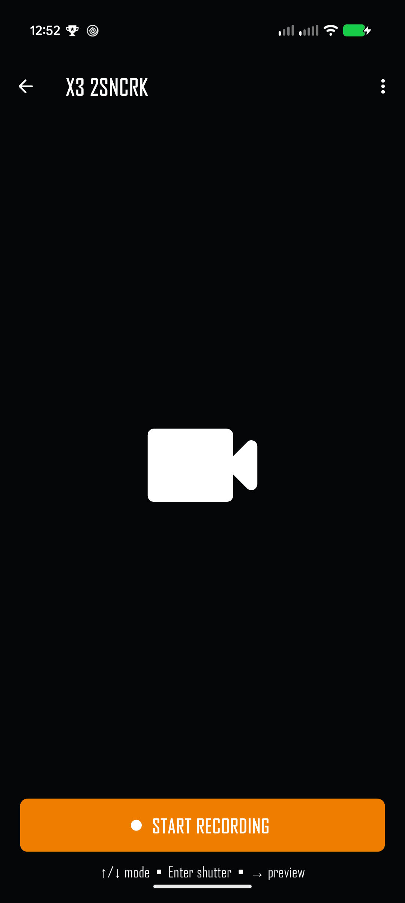
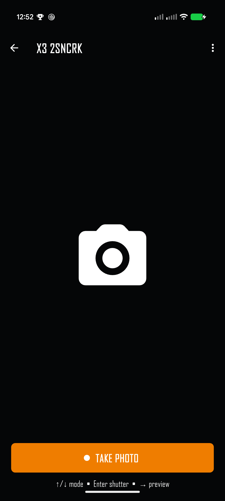
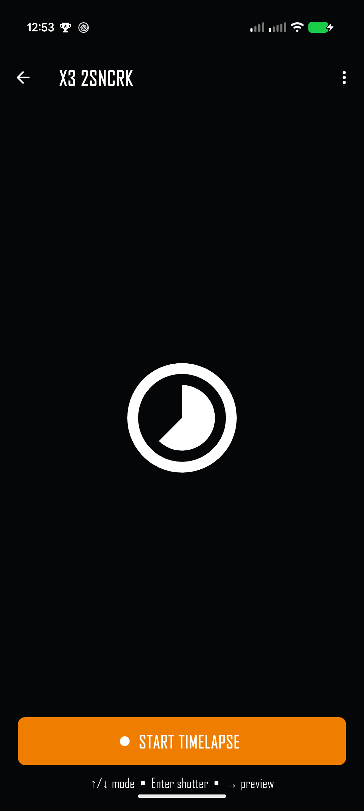
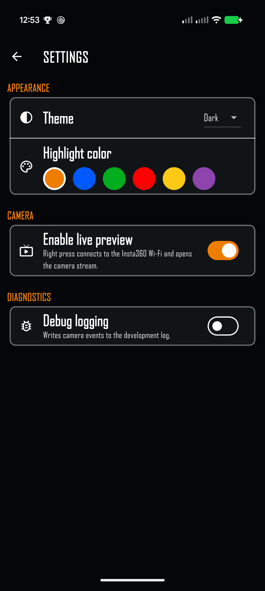
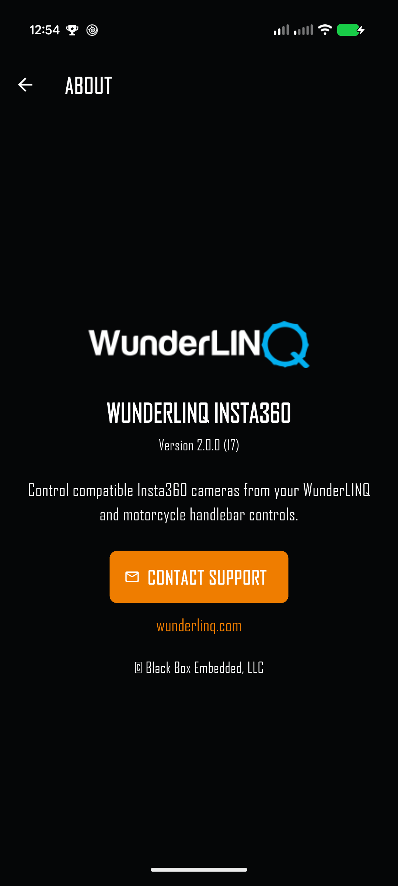

Quick start
WunderLINQ Insta360 uses Bluetooth to find and control a compatible camera. Live preview also connects the phone to the camera's Wi‑Fi. Set up both connections while parked.
- Power on and wake the Insta360. Enable Bluetooth on the phone and allow the app to use it.
- Open WunderLINQ Insta360. Wait for your camera to appear and select its row.
- Wait for the camera control screen. The app may take several seconds to initialize the camera after Bluetooth connects.
- Press Up or Down to switch modes. Press Enter or the large on-screen button to use the shutter.
- For preview, enable it in Settings, then press Right or swipe left across the camera screen.
Find and connect


First connection
Keep the camera powered on and close to the phone. The app scans for compatible Insta360 cameras over Bluetooth. If your camera is missing, put it in its connection or pairing state and tap the rescan icon. Select the correct camera and accept any system Bluetooth prompt that appears.
After Bluetooth connects, the app reads the camera's capture controls before opening the Video, Photo, or Time Lapse screen. Allow a few seconds for this first connection. If it returns to discovery, wake the camera and select it again.
Reconnect or disconnect
Tap the back arrow or press Left from the camera controls to return to discovery and release the camera connection. Select the camera again to reconnect.
Handlebar and touch controls
The app supports directional and Enter input from the WunderLINQ setup, with matching touch gestures on the phone.
| Input | On the camera screen | Touch equivalent |
|---|---|---|
| Up / Down | Cycle through available Video, Photo, and Time Lapse modes. | Swipe vertically. |
| Enter | Take a photo, start or stop video recording, or start or stop time lapse. | Tap the large shutter button. |
| Right | Open live preview when it is enabled. | Swipe left. |
| Left | Return to camera discovery. In preview, return to camera controls. | Tap Back or swipe right. |
| Escape | Open the main WunderLINQ app from camera controls. In preview, return to camera controls. | Use Back or the app switcher as appropriate. |
On the discovery screen, Up and Down select a camera, Enter connects, and Escape opens the main WunderLINQ app.
Camera modes and shutter
The current mode appears as a large icon and a labeled shutter button. The app asks the connected camera to change mode, then follows the mode reported by the camera. Give the camera a moment to finish each switch before using the shutter.



Live preview

- Open the overflow menu and switch on Enable live preview in Settings.
- Return to camera controls and stop any active recording or time lapse.
- Press Right or swipe left. The app connects the phone to the Insta360 Wi‑Fi and starts the camera preview.
- Use Back, Left, Escape, or a right swipe to leave preview.
The phone may ask to join a camera Wi‑Fi network that does not provide internet; accept the prompt and stay connected. The first image can take a few seconds to appear. The preview is a viewfinder, not a recording or download screen.
Settings and menu
The overflow menu is available from discovery, camera controls, and live preview. Choose Settings or About.

| Setting | What it changes |
|---|---|
| Theme | Choose Dark, Light, or System appearance. |
| Highlight color | Choose the accent for selections and controls. The color choices match the main WunderLINQ Flutter app. |
| Enable live preview | Allows Right or a left swipe to connect to the camera Wi‑Fi and show the stream. Off by default. |
| Debug logging | Writes camera events to the development log when troubleshooting with support. |
Camera compatibility
The app discovers cameras through the Insta360 Camera SDK. Available capture modes and preview behavior depend on the connected model, firmware, and SDK support. This guide's X3 screenshots show a tested example; they do not imply every Insta360 model has the same modes or wireless prompts.
If a camera connects but a mode or preview is unavailable, check that the camera supports that feature, update its firmware, and reconnect so the app can refresh the camera state.
Troubleshooting
| Symptom | What to check |
|---|---|
| Camera does not appear | Wake the Insta360, enable phone Bluetooth, grant Bluetooth permission, and tap Rescan. Keep the camera nearby. |
| Camera appears but does not connect | Leave the camera powered on, accept any phone pairing prompt, and allow time for the app to initialize its controls. If it returns to discovery, restart the camera and retry. |
| Mode does not change | Wait for recording or another camera operation to finish. Retry after the camera is idle and check its own display for a warning. |
| Shutter does not respond | Confirm the camera is connected and ready. Check the camera for a full card, overheating, or another capture warning. |
| Preview will not open | Enable live preview, stop recording, keep the camera awake, and accept the system Wi‑Fi join request. |
| Preview is blank or stalled | Wait a few seconds for the first image. Check that the phone joined the Insta360 Wi‑Fi, then return to camera controls and open preview again. |
Support and safe use
Open About → Contact Support for help. Include the app version, Insta360 model and firmware, phone model, and the steps that led to the issue. If support requests logs, enable Debug logging and repeat the problem.
Pair devices, configure settings, and check the camera while parked. Use handlebar controls only when conditions permit and keep attention on the road. Mount the phone and camera securely.
Back to top ↑